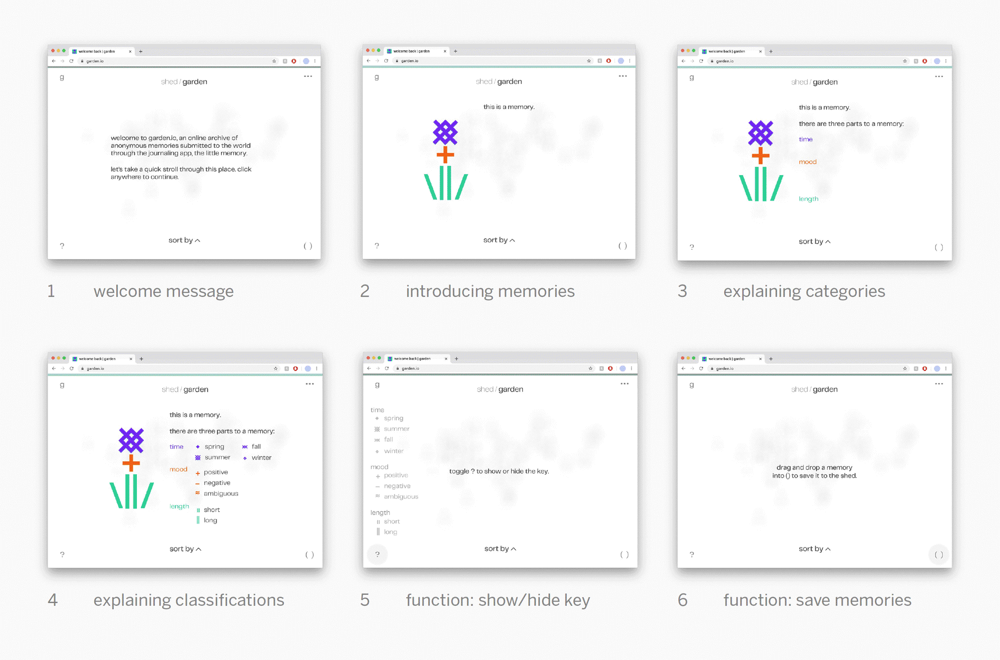

Spring – Summer 2020
400 × 400 px
memory garden (memgarden) began as wireframes for a speculative online memory archive comprising anonymous memories submitted to the little memory, a mobile journaling app. I was initially interested in the metaphors of language as furniture and memories as flowers, as well as the potential of curating a private and meditative space for people watching and personal reflection.

Later adapting these sketches as a small p5.js-based prototype, I leaned further into ASCII art influences, having been introduced to the wondrous worlds of digital gardening and the handmade web.